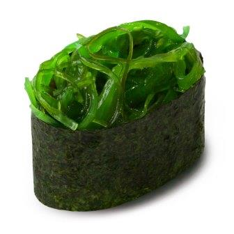
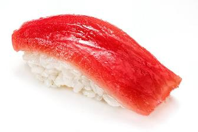
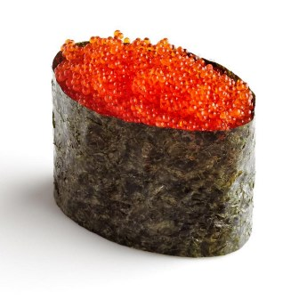
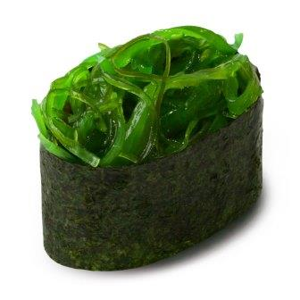
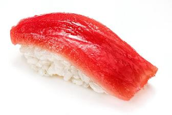
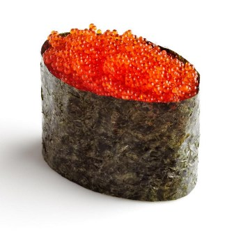

Cуши
|  | ЧуккаДиетические суши, приготовленные из одноименного салата, риса, кунжута и водорослей нори. |
|  | МагуроКлассические суши. Готовятся из тунца и риса. |
|  | ТобикоСуши готовятся из риса, икры летучей рыбы, нори. |
|  | ЧуккаДиетические суши, приготовленные из одноименного салата, риса, кунжута и водорослей нори. |
|  | МагуроКлассические суши. Готовятся из тунца и риса. |
|  | ТобикоСуши готовятся из риса, икры летучей рыбы, нори. |